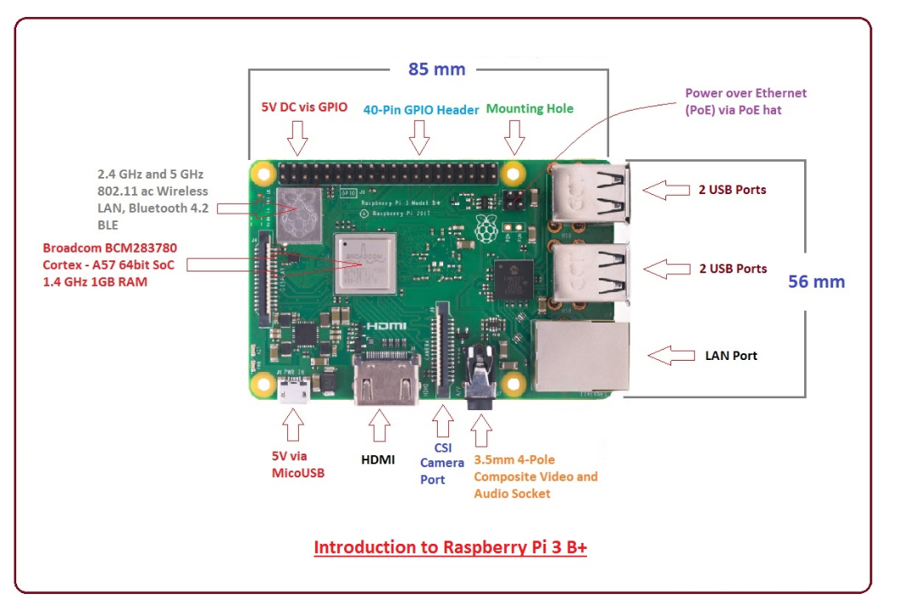
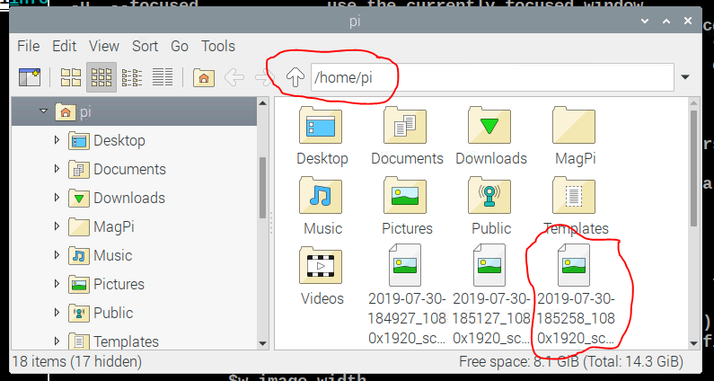

Figure 1-Raspberry Pi 3 B+
These instructions will show you how to prepare the operating system for a Raspberry Pi single-board computer (SBC); boot and then configure the device. SBCs are becoming ubiquitous-examples are Nest thermostats , Ring doorbells, and Home Automation. These devices make up the Internet of Things-IoT, which is greatly impacting organizations and everyday life. In later assignments you will continue experimenting with SBCs, microcontrollers, sensors, actuators and other networking devices to provide an understanding of the technology and the ability to synthesize novel solutions.
After completing this assignment you will be able to:
You are expected to have a working knowledge of SBC hardware and software. If you do not understand how to use an item, perform a Google Search, refer to the WSU Technology Knowledge Base, ask a teaching assistant, or ask the instructor.
 Figure 2-Raspberry Pi 3 B+ layout
W1n0nA
Scrot (short for SCReen shOT) takes screenshots that document your work.
scrot -h
Figure 5- Scrot Help
scrot
Figure 6-Scrot Screen Shots
scrot -s
Figure 7-Desktop Screenshot by scrot -s
This work is done on your laptop. For this Exercise read all of these instructions. You are submitting a screen shot to the appropriate D2L Assignment folder that documents your work. Use the Snipping Tool for screen shots Do not try this on the Raspberry Pi, as it will take a long time, and it may freeze up.
The Raspberry Pi organization provides a lot of materials explaining what can be done with the Raspberry Pi single board computer. Check out their books Check out their magazines
Open NotePad Enter your Name, Assignment (IOT01) and date so that it is visible next to the article, as shown below:
Figure 8-Article Screen Shot
Use the Snipping Tool to make a screenshot from the article you chose in The Official Raspberry Pi Handbook 2022.
(40) 1. On your laptop, login to D2L. Upload your screenshot to the 'IOT01' D2L Assignment Folder.
This work is done on your laptop in Visual Studio or Dream Weaver. Based on your experience in this exercise and what you just learned, develop a brief statement about the value of single board computer technology to organizations. Think about what type of problems these devices could solve, and would it be cost-effective?
When all tasks are completed press the Submit button.
Congratulations! You have successfully worked with a Raspberry Pi single board computer. In the next series of assignments you will explore how to communicate with and control the Raspberry Pi from another computer.